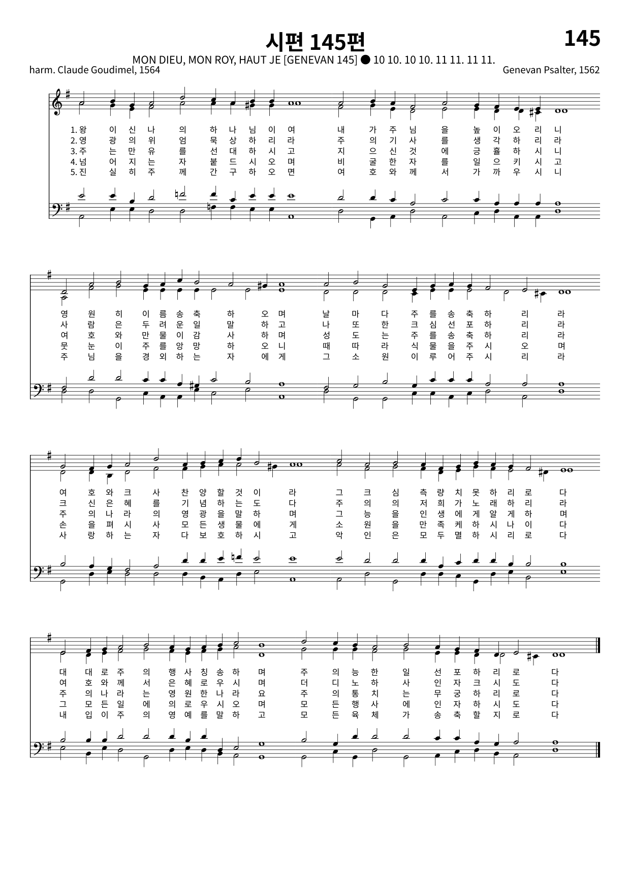

시편 145편
MON DIEU, MON ROY, HAUT JE [GENEVAN 145] · 10 10. 10 10. 11 11. 11 11.
곡조: Genevan Psalter, 1562 · 화성: Claude Goudimel, 1564 · 가사: 개역한글판 시편 145편 편역(AI 초벌 편역판 · 신학 감수 전) · 5절
악보 PDF MusicXML(출력용) MusicXML(반주용, 전주·반복 포함) 개역한글 시편 145편 읽기

가사
1절
왕이신 나의 하나님이여
내가 주님을 높이오리니
영원히 이름 송축하오며
날마다 주를 송축하리라
여호와 크사 찬양할 것이라
그 크심 측량치 못하리로다
대대로 주의 행사 칭송하며
주의 능한 일 선포하리로다
왕이신 나의 하나님이여
내가 주님을 높이오리니
영원히 이름 송축하오며
날마다 주를 송축하리라
여호와 크사 찬양할 것이라
그 크심 측량치 못하리로다
대대로 주의 행사 칭송하며
주의 능한 일 선포하리로다
2절
영광의 위엄 묵상하리라
주의 기사를 생각하리라
사람은 두려운 일 말하고
나 또한 크심 선포하리라
크신 은혜를 기념하는도다
주의 의 저희가 노래하리라
여호와께서 은혜로우시며
더디 노하사 인자 크시도다
영광의 위엄 묵상하리라
주의 기사를 생각하리라
사람은 두려운 일 말하고
나 또한 크심 선포하리라
크신 은혜를 기념하는도다
주의 의 저희가 노래하리라
여호와께서 은혜로우시며
더디 노하사 인자 크시도다
3절
주는 만유를 선대하시고
지으신 것에 긍휼하시니
여호와 만물이 감사하며
성도는 주를 송축하리라
주의 나라의 영광을 말하며
그 능을 인생에게 알게 하며
주의 나라는 영원한 나라요
주의 통치는 무궁하리로다
주는 만유를 선대하시고
지으신 것에 긍휼하시니
여호와 만물이 감사하며
성도는 주를 송축하리라
주의 나라의 영광을 말하며
그 능을 인생에게 알게 하며
주의 나라는 영원한 나라요
주의 통치는 무궁하리로다
4절
넘어지는 자 붙드시오며
비굴한 자를 일으키시고
뭇 눈이 주를 앙망하오니
때 따라 식물을 주시오며
손을 펴시사 모든 생물에게
소원을 만족케 하시나이다
그 모든 일에 의로우시오며
모든 행사에 인자하시도다
넘어지는 자 붙드시오며
비굴한 자를 일으키시고
뭇 눈이 주를 앙망하오니
때 따라 식물을 주시오며
손을 펴시사 모든 생물에게
소원을 만족케 하시나이다
그 모든 일에 의로우시오며
모든 행사에 인자하시도다
5절
진실히 주께 간구하오면
여호와께서 가까우시니
주님을 경외하는 자에게
그 소원 이루어 주시리라
사랑하는 자 다 보호하시고
악인은 모두 멸하시리로다
내 입이 주의 영예를 말하고
모든 육체가 송축할지로다
진실히 주께 간구하오면
여호와께서 가까우시니
주님을 경외하는 자에게
그 소원 이루어 주시리라
사랑하는 자 다 보호하시고
악인은 모두 멸하시리로다
내 입이 주의 영예를 말하고
모든 육체가 송축할지로다